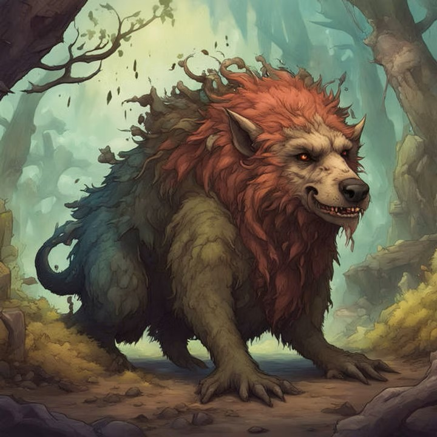

The Thingy

image created with AI
She: I haven't seen it and don't want to.
He: Don't be that way. George says it's interesting. We should open out to the world.
She: These days? Are your mad? With that hole in the roof and your cough getting worse?
He: I think it's only nerves. There's not enough calm in this house.
She: Well take a deep breath and have a tissue ready.
He: You keep the doors double locked.
She: A draft won't help your chest.
He: Our nerve ends are knotted up.
She: Who's nervous? Are you nervous? I'm not nervous.
He: George says the thing is very peaceful. He can't even hear it breathe.
She: He shouldn't get that close to it, whatever it is.
He: He's pretty sure it's animal. Not vegetable or mineral.
She: Disgusting!
He: It's not at all bad looking.
She: And rain's forecast.
He: It's animal alright, George says. But he can't tell which sex.
She: Have you got the bucket ready and empty?
He: I'll look after it this afternoon.
She: They said showers tonight. But they're never right. That could be this evening.
He: After dark, in any case. You can't expect absolute precision with forecasts. Wind can drop, sudden gusts rise, rogue clouds, surprises.
She: A good reason to get the bucket in place now.
He: The sun is still shining. Relax.
She: There, you're coughing again. It sounds worse.
He: It's those peanuts. Their skins irritate. Don't they do the skinless kind anymore?
She: You were coughing first thing this morning. Don't tell me you got up before dawn to eat peanuts.
He: I told George to try peanuts with it.
She: The thing eats?
He: It seems to have a mouth.
She: Then he should make it talk, squeeze it, pinch it. The thing can't just sit there forever like a…nothing. Everyone has to contribute, lend a hand.
He: George didn't mention arms and all that. Or sitting.
She: Standing then, whatever.
He: He says it slumps there in his garden shed.
She: If it slumps, it has to be standing.
He: No, it could slump sitting.
She: Stoop you mean. If it was sitting it could stoop.
He: George says it just lies flat.
She: Then he can forget about sitting, slumping or stooping.
He: Why?
She: The thing's flat out for chrisake!
He: Hold your horses. Does flat mean ramrod straight?
She: Nobody lies down straight as a stick.
He: Some do, in coffins.
She: None of your gallows humor, please.
He: Just to prove a point. Logic.
She: Weather's not reasonable. Check if the sun is still shining.
He: The sun is as regular as clockwork. Logical from its standpoint.
She: We don't want the rain coming through the hole again.
He: Holes. There are more than one. It's that whole area of the roof.
She: Why didn't you tell me? Did you count them?
He: It's an ongoing project.
She: Go and count them this minute. Tell me how many.
He: Useless. There are more all the time.
She: We'll have another unholy mess on the floor.
He: That time it was snow, not rain.
She: No difference for our mop.
He: There's no catching snow in our bucket. It doesn't fall straight. The flakes float down kinda dancing.
She: Okay they slump or stoop.
He: Once through the hole the flakes waft around and miss the bucket.
She: Shouldn't we do a kind of trough or garden pool arrangement then? I remember the blizzards when I was a girl.
He: We'll think about it in the autumn. Anyway they predict a mild winter. We're lucky.
She: Best to be prepared.
He: You can't be prepared for everything. You said yourself the weather can't be counted on.
She: But it never goes away and is full of your surprises. Like your cough.
He: George isn't so lucky with that shed.
She: The shed caused no trouble till he put that thing in it.
He: Animal, he's pretty sure. There seems to be a mouth. That means sooner or later it will have to eat.
She: Starve it out, I would. Make it own up.
He: If it eats, there will be a problem.
She: The disgusting thing will have to do number two?
He: Not only shit but piss on top of it. There's a lot to be said for vegetables and minerals.
She: No plumbing and what about heating when the snow falls?
He: Some animals get on with the cold.
She: Vegetables freeze up. Not minerals.
He: George says it's not leafy or rock hard.
She: He puts his hands on the revolting thing?
He: Prods it, I think, with a stick.
She: I hope he wears gloves.
He: There'd be a pair hanging there. It's a garden shed.
She: And a garden shears, maybe, to chase the thing away.
He: Where?
She: Out of the shed.
He: Where to stick it with the shears?
She: A threat. First a threat.
He: Then?
She: Prick it just a tiny bit.
He: But where? It's not as if it has a behind.
She: Jesus, anywhere.
He: You wouldn't want to touch a vital organ.
She: George has to get it moving.
He: You ever see a vegetable walking? Or a mineral on the move?
She: He ought to just take his boot to it.
He: You know George. He's not the rash type.
She: I wish he'd settle his own problems and leave us out of it. There, look, it got you coughing again.
He: That's all your talk about winter weather. Look on the bright side. Right now the sun is shining through the holes in our roof.
She: And you say the holes are getting bigger?
He: No, there are more of them. Not necessarily bigger.
She: And you want me to worry about George's shed?
He: No worry there. Its roof is pretty solid corrugated iron.
She: So that thing is better off than we are.
He: A bit of rust maybe.
She: Look. Does this thing smell?
He: Not worth mentioning, apparently. It would help if it did.
She: Stink?
He: Then it would definitely be animal.
She: No way. A vegetable can smell. And I know minerals that give off a distinct odor if you push your nose into them.
He: Of what?
She: Of mineral. A mineral smell.
He: But we're talking stink.
She: Garlic stinks, onions stink. Many cheeses stink.
He: Marginal cases. Exceptions. You can't name one mineral that gives you a good knock back on your heels stink.
She: Sulphur.
He: You win but there's no hair on it.
She: The awful thing has hair?
He: George says something like.
She: Now you're coughing again.
He: It's only a hair in my throat.
She: You want me to be interested in this hairy thing? After what I told you in confidence about how my stomach was turned as a girl by hairy males?
He: Wait a moment. Hirsute it is not. And we're talking curiosity not intimacy.
She: Is it hairy or not? That's all I'm curious about.
He: The hairs are not the regular kind. George said they were like tiny blades of grass. Not green though. You see the problem? While clearly not mineral, the thing could be vegetable. Understand?
She: Clearly not mineral he says. You never got stuck by a stalactite like a needle?
He: You mean a stalagmite.
She: Same difference. They sting too, if you sit on them.
He: As animal, it would be easier to handle.
She: I don't know about that. Vegetables don't bite. Minerals just lie there, no trouble.
He: With an animal however troublesome we know where we are.
She: Sure, we're feeding it and cleaning up its stools. We steer it here and it wants to go there. Its mind of its own comes up with quibbles, arguments.
He: George isn't at a conversational point yet with the thing.
She: He should pry its mouth open with his garden spade.
He: Who knows if there's a tongue in there or teeth.
She: I think George is dithering as usual
He: It might react. Wouldn't you? With a spade in your mouth.
She: Your cough sounds different now.
He: It's the cough syrup. We bought the one for tenors. I'm a baritone.
She: You're saying it might resent the taste of the spade and attack George?
He: Stands to reason. If it's the animal we think it is.
She: When George is opening its mouth, his wife should hold the thing down, with gloves, of course.
He: Isabel's not the delicate type. She's already helped George look for the bottom and the top of it.
She: She ought to be ashamed.
He: George said she was quite excited when she found it.
She: The head or tail?
He: Something like a navel. You know, a bellybutton.
She: My God!
He: It was a clue but not the answer.
She: It's animal if it had one of those.
He: Not so fast. There are some very queer vegetables out there. Think of China.
She: Still, if it has a belly and a button, we can be pretty sure…
He: That it's animal, granted. But the problem remains.
She: How's that? They've found the navel.
He: Think. The belly's in the middle but where do you go from there? Which way is up and which way is down?
She: Jesus! Just kick it in the ass out the back gate. And hold your hand over your mouth when you cough like that.
He: That would be risky. I'm out of tissues.
She: The bellybutton might fight back?
He: George is right to be cautious. There could be a law against it. Obstructing the roadway, dumping garbage, cruelty to animals.
She: He's covered by insurance isn't he?
He: Those policies are tricky, small print and all that.
She: Nonsense, this is a case of public nuisance.
He: Yes, but who would be the nuisance, it or George?
She: Something's wrong with George.
He: Maybe, he's religious. Don't do unto others too quickly.
She: God put it there in his shed?
He: And he says you never know, it might be worth something.
She: Can't you stop coughing like that?
He: I'm afraid not.
She: It's getting to me.
He: It's got me. You should think of it as a personality trait, like a stutter.
She: What I think is that we're doomed.
He: Come on, loosen up. We don't even have a garden shed.
She: Listen to you hack. It cuts my innards.
He: I'll turn my back and stutter.
She: No, go up and manoeuvre the bucket. I think I heard thunder.
He: Let's wait a while. They say climate change is on the way.